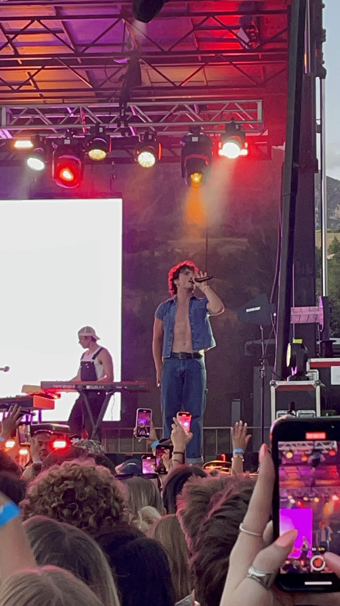
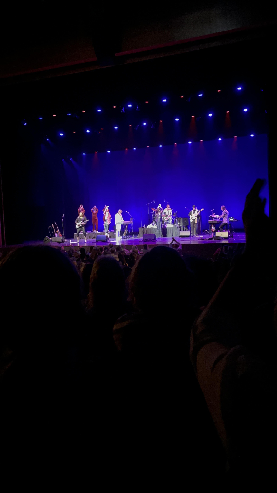
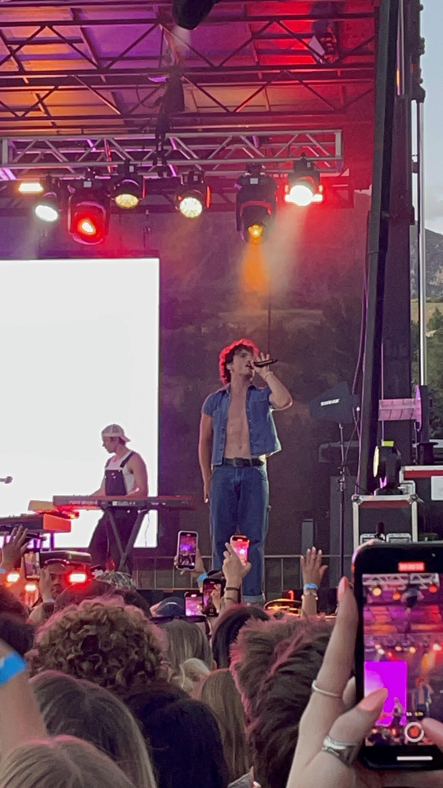
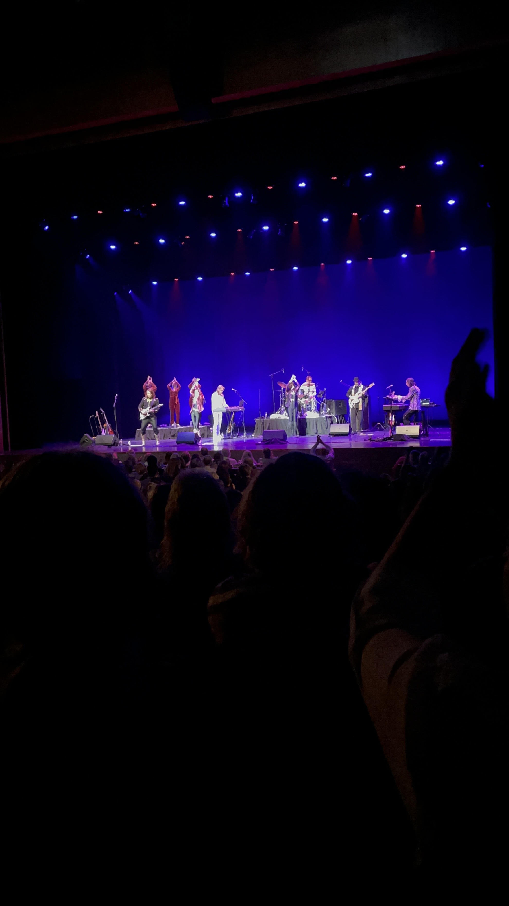

I have loved theater since I was young. I've been doing the school musicals since 2nd grade. I love going to see a performances and being in them too! I've taken theater camps over the summers to help me work on my skills. I'm also taking choir this year to help me learn more about my voice. I hope to keep doing theater throughout high school!
Spotlight: My Mom
I want to spotlight my Mom because she started my journey. Putting me in the musical in 2nd grade changed my life. She has supported the most along the way, and I am grateful for that.
Timeline
- 2nd grade: My mom signed me up for the school musical. I performed my first play.
- 3rd grade: I auditioned for my first time.
- 4th grade: I didn't understand the play, so I did stage crew instead.
- 5th grade: This was my second audition. I was put into ensemble.
- 6th grade: I was put into ensemble and met a lot of new people!
- 7th grade: I auditioned for a featured role and got it!
- 8th grade: I got a small part and I made a lot of new friends.
- 9th grade (current): This is my first year doing a high school musical and play!
 



I love being entertained. Either by theater performances, comedy, movies, shows, or concerts.I have seen many musicals. Hale Centre Theatre and Eccles are my favorite places to see them. I've gone to elementary schools, middle schools, and different high schools to go see musicals too! I love seeing how different people do different things in theater. I love supporting other people and just watching musicals.
Goals
- Be in the school musical all four years of high school
- Be apart of an advanced choir
- Audition for a lead role